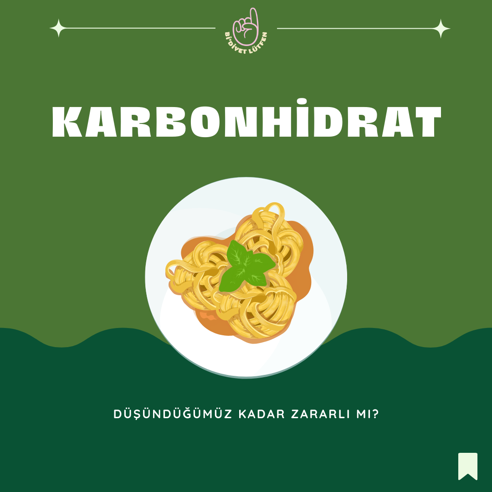

Karbonhidratlar Hakkında
Karbonhidratların sağlığa zararlı olduğuna dair bir korku var. Özellikle kilo vermek için düşük karbonhidratlı diyetler oldukça popüler hale geldi. Bugün karbonhidratların ne olduğunu ve sağlıklı seçeneklerini sizlerle paylaşacağım.
- Karbonhidrat üç makro besinden biridir. Karbonhidrat tükettiğimizde, vücudumuz karbonhidratı kan dolaşımında emilen basit şekerlere yani glikoza ayırır. Vücudumuzdaki şeker seviyesi yükseldikçe pankreas, insülin adı verilen bir hormon salgılar. İnsülin, glikozu kandan hücrelere taşımak için gereklidir. Vücudumuzun ana enerji kaynağı olan karbonhidratın metabolizması basitçe bu şekilde işler.
- Basit karbonhidratlar, kanımıza çabuk karışan ve çabuk sindirdiğimiz besinlere verilen addır. Özellikle rafine şeker içeren tüm gıdalar, mısır şurubu, fruktoz şurubu, beyaz undan yapılmış tüm besinler ve meyve suları verilebilecek örneklerdendir.
- Kompleks karbonhidratlar, sindirim sürecini daha uzun sürede tamamlar. Bu sebeple kan şekerini daha yavaş yükseltir ve düşürürler. Bu besinlere örnek olarak esmer pirinç, kinoa, yulaf, mercimek, bezelye, elma, muz, çiğ bademverilebilir.
- Karbonhidratlar, kilo alımı, obezite ve diyabet ile ilişkisi nedeniyle kötü bir üne sahiptir. Bu nedenle, düşük karbonhidratlı diyetler oldukça popüler hale geldi. Bununla birlikte, yapılan birkaç çalışma, tükettiğimiz karbonhidratların kalitesinin, miktarı kadar önemli olduğunu göstermiştir.
- ”Kaliteli” ya da “sağlıklı” karbonhidrat içeren besinlere örnek olarak sebze grubu, meyveler, kurubaklagiller, tam tahıllı ürünler, kuruyemişler, kinoa ve chia gibi tohumlar verilebilir. Sağlıklı karbonhidratlar; metabolizmanın korunmasına yardımcı olurlar ve lif içerikleri daha yüksektir. Sindirim sisteminin korunmasını, kan şekeri seviyesinin dengelenmesini ve diyabetin önlenmesine yardımcıdır
- Karbonhidratlardan korkmak ve bu makro elementi diyetimizden çıkarmak farklı sonuçlara neden olabilir. Bir çok danışanımdan da duyduğum “ben zaten ekmek yemiyorum” gibi cümleler aslında çok da sağlıklı ya da bir diyetisyeni mutlu edecek cümleler değil 🤓. Önemli olan ihtiyacımız kadar, “sağlıklı” karbonhidratları diyetimize entegre etmektir